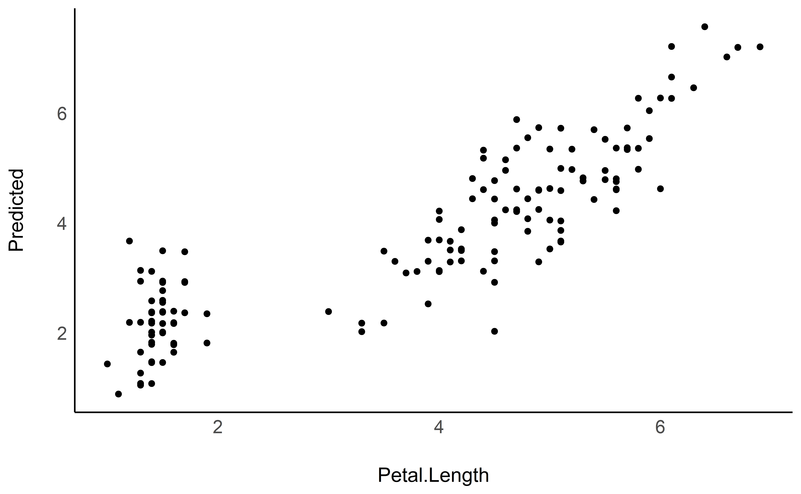
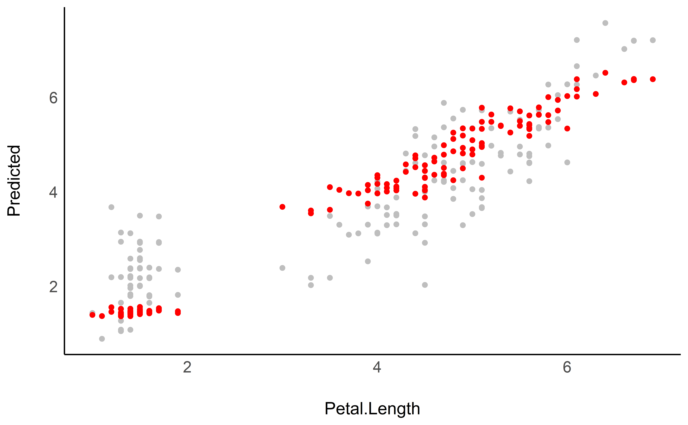
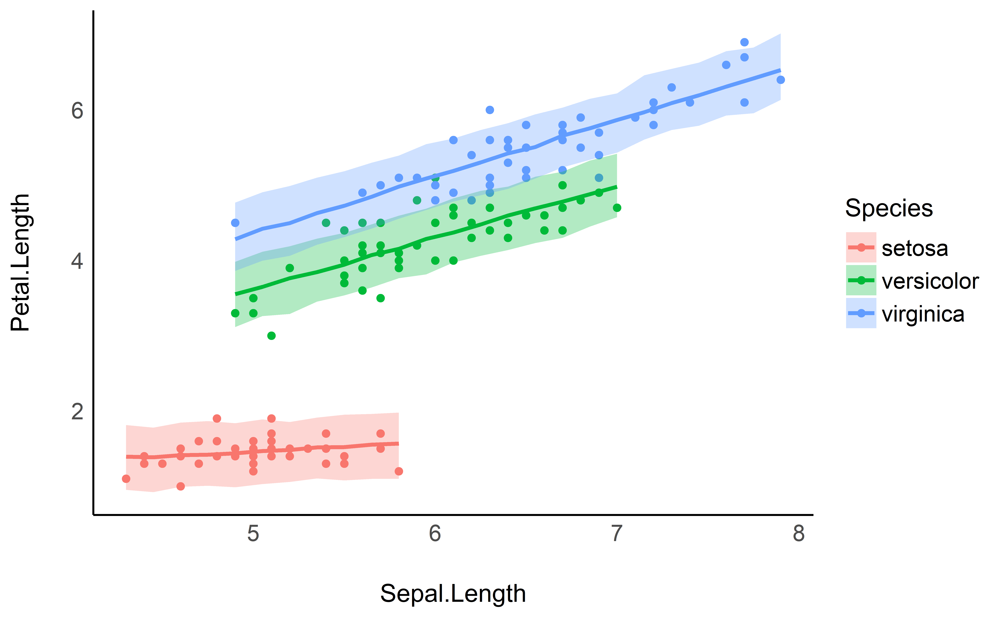
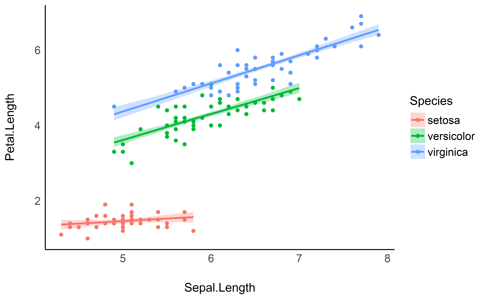
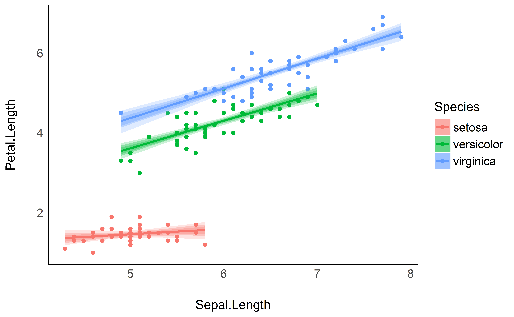
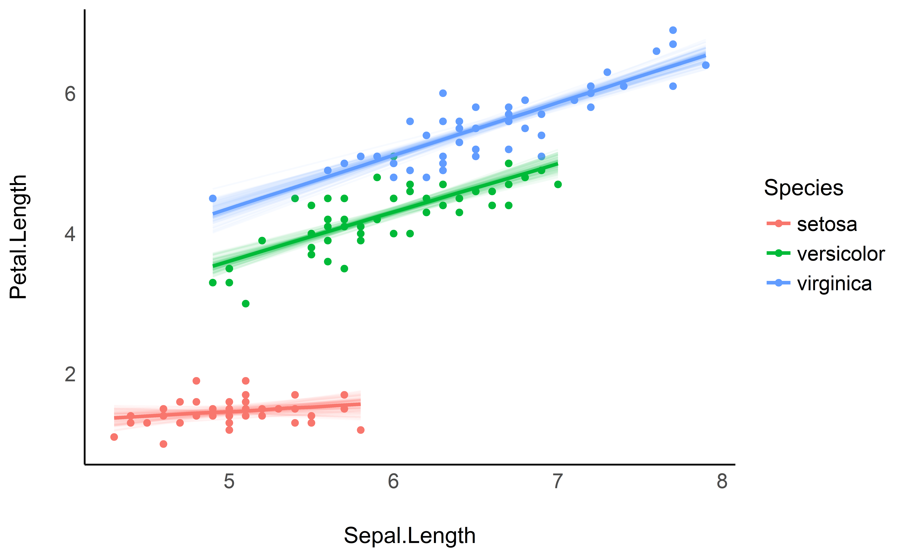

This vignette will present how to generate predictions using estimate. Warning: we will go full Bayesian. If you’re not familiar with the Bayesian framework, we recommend starting with this gentle introduction.
Prediction against original data
Generating prediction from the model can be used for a wide variety of reasons, one of them being visualisation. This can be achieved via the estimate_response() function and its visualisation spinoff, estimate_link().
Let’s start by fitting a Bayesian linear regression.
We might be interested in comparing the values predicted by the model to the actual “true” values. This can be done by generating predictions:
> Sepal.Length Median CI_low CI_high
> 1 5.1 2.4 0.987 3.8
> 2 4.9 2.0 0.589 3.4
> 3 4.7 1.7 0.233 3.1
> 4 4.6 1.5 0.052 2.9
> 5 5.0 2.2 0.815 3.6
> 6 5.4 2.9 1.478 4.3The output is a dataframe containing predicted values (the median and CI of the posterior distribution) for each of the value of the original dataframe (used for fitting the model). Hence, we can simply add the prediction column (Median) to the original dataset and plot the original against the predicted data.
library(ggplot2)
library(dplyr)
library(see)
data$Predicted <- predicted$Median
data %>%
ggplot(aes(x = Petal.Length, y = Predicted)) +
geom_point() +
theme_modern()
It seems like our model does not perform too bad. What if we added information about the Species in the model?
model <- stan_glm(Petal.Length ~ Sepal.Length * Species, data = data)
data$Predicted_2 <- estimate_response(model)$MedianWe could now plot the second observations, based on a more complex model, as a red overlay to the previous points:
data %>%
ggplot() +
geom_point(aes(x = Petal.Length, y = Predicted), color = "grey") +
geom_point(aes(x = Petal.Length, y = Predicted_2), color = "red") +
theme_modern()
The new model generated much more accurate predictions (closer from the underlying regression line).
Estimating response vs. link
Rather than visualising the predictions made by a model, we are often interested in visualising the links. In the model above, this would be the relationship between the response and the two predictors. This can be achieved by generating the predictions on the data grid of the model’s data instead of the original dataset.
We will do that to visualise the relationship between the response (Petal.Length) and the predictors (Sepal.Length and Species).
predicted <- estimate_response(model, data = "grid")
iris %>%
ggplot(aes(x = Sepal.Length)) +
geom_point(aes(y = Petal.Length, color = Species)) +
geom_ribbon(data = predicted, aes(ymin = CI_low, ymax = CI_high, fill = Species), alpha = 0.3) +
geom_line(data = predicted, aes(y = Median, color = Species), size = 1) +
theme_modern()
However, you might notice that the Credible Interval (CI) bands are quite big. This is where estimate_link() is comming in. In a traditional, frequentist, regression, the predictions are deterministic: they will always fall on the regression line. However, in a Bayesian framework, they are probabilistic. Hence here, predicting the response is not the same that predicting the link (i.e., the regression line and the uncertainty interval associated with this line).
In order to facililate visualisation of links, we added estimate_link() as a shortcut to estimate_response() with data = "grid" and, for Bayesian models, predict = "link" and some smoothing by default. estimate_response() would be used in the context of generating actual predictions for the existing or new data, whereas estimate_link() is more relevant in the context of visualisation and plotting.
predicted <- estimate_link(model)
iris %>%
ggplot(aes(x = Sepal.Length)) +
geom_point(aes(y = Petal.Length, color = Species)) +
geom_ribbon(data = predicted, aes(ymin = CI_low, ymax = CI_high, fill = Species), alpha = 0.3) +
geom_line(data = predicted, aes(y = Median, color = Species), size = 1) +
theme_modern()
Different CI levels
The purpose of CI bands is to provide information about the uncertainty related to the estimation. In the Bayesian framework, the credible intervals are directly related to the shape of the posterior distribution. Thus, showing different CI levels (for instance, 69%, 89% and 99%).
predicted <- estimate_link(model, ci = c(0.69, .89, 0.99))
iris %>%
ggplot(aes(x = Sepal.Length)) +
geom_point(aes(y = Petal.Length, color = Species)) +
geom_ribbon(data = predicted, aes(ymin = CI_low_99, ymax = CI_high_99, fill = Species), alpha = 0.2) +
geom_ribbon(data = predicted, aes(ymin = CI_low_89, ymax = CI_high_89, fill = Species), alpha = 0.3) +
geom_ribbon(data = predicted, aes(ymin = CI_low_69, ymax = CI_high_69, fill = Species), alpha = 0.3) +
geom_line(data = predicted, aes(y = Median, color = Species), size = 1) +
theme_modern()
Adding individual draws
Instead (or in addition to) representing credible/confidence intervals, the Bayesian framework also allow to represent every individual posterior draw. In this case, they correspond to all possible links estimated by the model. In it a nice insight into the “true” underlying probabilities in addition to summaries like the median or the CI.
# Keep only 100 draws (keeping all the draws might be slower)
predicted <- estimate_link(model, keep_draws = TRUE, draws = 100)
# Format draws for plotting
draws <- reshape_draws(predicted)
draws$group <- paste0(draws$Draw_Group, draws$Species)
iris %>%
ggplot(aes(x = Sepal.Length)) +
geom_point(aes(y = Petal.Length, color = Species)) +
geom_line(data = draws, aes(y = Draw, color = Species, group = group), alpha = 0.05) +
geom_line(data = predicted, aes(y = Median, color = Species), size = 1) +
theme_modern()
Animated hypothetical outcome plots can also be easily created with gganimate:
library(gganimate)
p <- iris %>%
ggplot(aes(x = Sepal.Length)) +
geom_point(aes(y = Petal.Length, color = Species)) +
geom_line(data = draws, aes(y = Draw, color = Species, group = group)) +
theme_modern() +
transition_states(Draw_Group, 0, 1) +
shadow_mark(past = TRUE, future = TRUE, alpha = 1/20, color = "grey")
gganimate::animate(p)